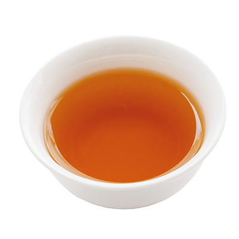
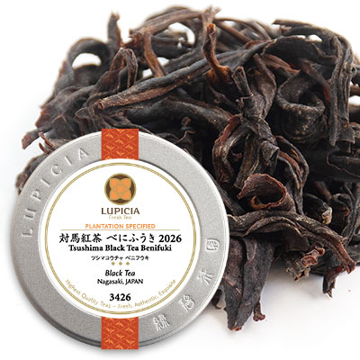

쓰시마홍차 베니후키 2026
対馬紅茶 べにふうき 2026


和紅茶を代表する品種 軽やかな「べにふうき」。
果実感のある芳醇な香りと、バランスのよい飲み口が印象的。紅茶品種「べにふうき」による和紅茶の名品。
【品種について】
「べにふうき」は、紅茶・半発酵茶兼用の品種として1993年に登録された品種です。
「べにふうき」は、「べにほまれ」を母（種子親）に、ダージリンからの導入種 「枕Cd86」 を父（花粉親）に交配、選抜されました。
母「べにほまれ」は、多田元吉氏がインドから持ち込んだ種子から選抜されたアッサム雑種であり、日本で最初の紅茶用品種として登録されています。
そのため、「べにふうき」もアッサム種に近い品種であり、水色は力強く濃い紅色、香りが豊かでボディ感があり渋みが強いといった特徴があります。
1999年、「べにふうき」に含まれるメチル化カテキンが花粉症などのアレルギー反応を抑制することが明らかにされたことで注目を集め、その後、栽培地域が広がりました。
なお、メチル化カテキンは緑茶に多く含まれる一方、紅茶にした場合は酸化酵素の働きによって失われることが判明しています。
【対馬（つしま）について】
九州の最北端に位置し、南北82km、東西18kmの細長い島で、韓国・釜山まではわずか50㎞の距離にあります。
島の89%は山林で、平地が少ないために農業は非常に限定的であり、現在お茶を生産しているのは1軒のみです。
【つしま大石農園について】
2007年に県の農業指導員だった大石孝義氏が、地元対馬の特産品を作ろうと島北部に新しく開墾した農園で、椎茸のほだ場（収穫場所）だった山を切り開き、「べにふうき」の幼木5,500本を植えたことから始まりました。2017年からは3代目となる裕二郎氏一家が島に移住、お父様とともに農園の拡大に取り組まれています。
山がちな対馬らしい自然豊かな渓流沿いの急傾斜地で、自然環境を生かしたお茶作りを行っています。
プレミアムティコンテスト2023にて星4つを獲得するなど、2016年以降多数の受賞歴があり、独自に研究を進めた紅茶の味わいが高く評価されています。
- 상품번호
- 3426
- 상품 형태
- 30g 캔입
- 가격
- 1,630円
- 판매 안내
- ※기간・수량한정
※상미기한：제조일로부터2년 - 원재료
- 紅茶※商品の改定などにより、商品パッケージの記載内容が上記内容と一部異なる場合がございます。
- 원산지
- 日本・長崎※商品の改定などにより、商品パッケージの記載内容が上記内容と一部異なる場合がございます。
- 찻잎
- 2.5-3g
- 물
- 熱湯
- 우림 시간
- 2-3分
- 우림 횟수
- 1-2回